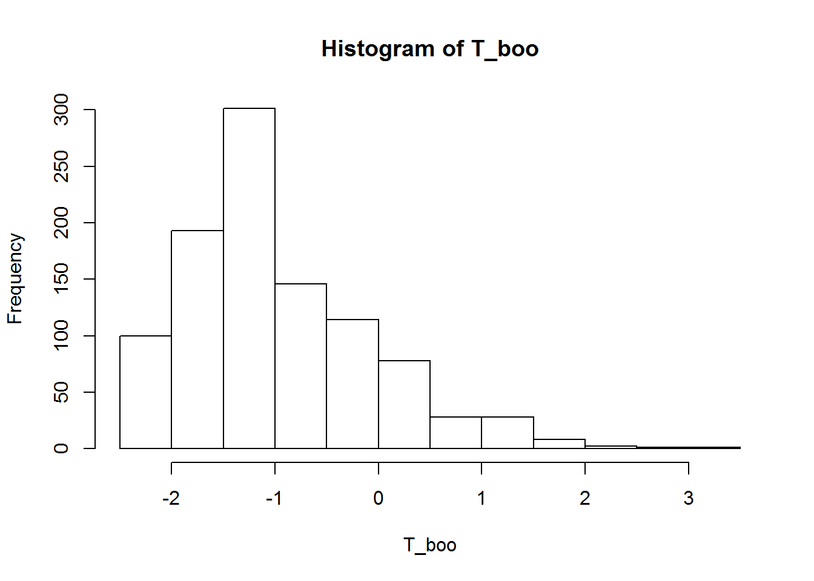
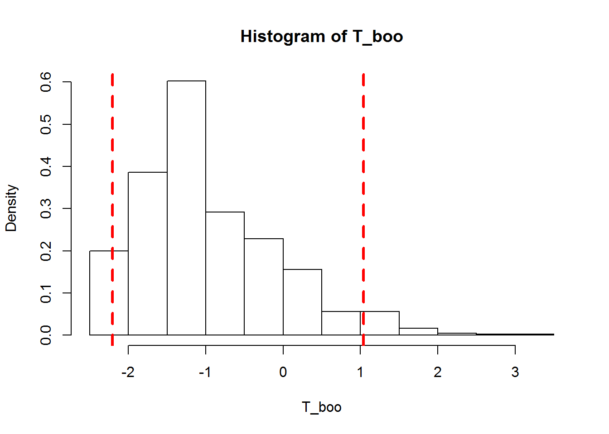
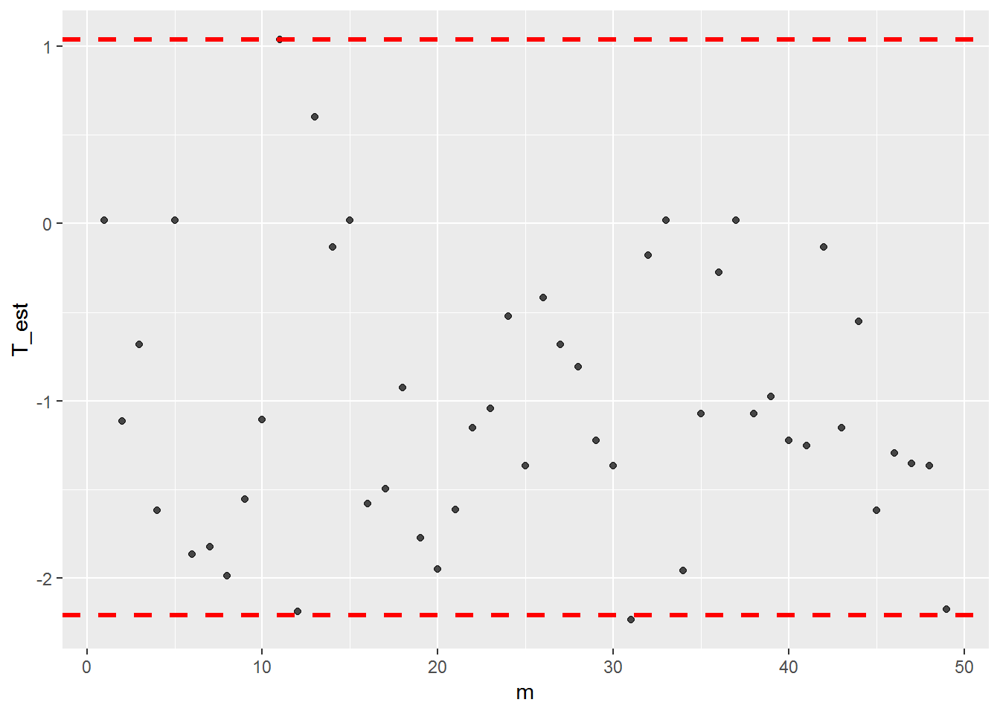

Capítulo 9 Control no Parametrico
author: “Isabel Zambrano”
9.1 Control No Paramétricos
Los gráficos clásicos de Shewhart se basan en supuestos de distribución, así como otros gráficos ampliamente utilizados, como el gráfico EWMA o CUSUM, dependen del supuesto de una distribución. El supuesto de distribución más utilizado es que el parámetro monitoreado se distribuye normalmente.
Sin embargo, cuando los tamaños de muestra son pequeños o la distribución subyacente está sesgada, esta suposición puede ser incorrecta. Una forma alternativa de manejar el caso de no normalidad es omitir el supuesto de una distribución paramétrica bien definida.
A continuación, se presentan y define un estadístico de constraste utilizado por los métodos de Control Estadístico no paramétricos.
9.2 Test de Rango Cuadrado “Conover”
Sean \(X = \{ X_1, X_2,..., X_n \}\) y \(Y = \{ Y_1, Y_2,..., Y_n \}\) dos muestras aleatorias, donde \(X_i \sim F\) y \(Y_i\sim G\), para \(i=1,2,...,n\) . Para contrastar la hipótesis \[ H_0: V[X] = V[Y] \] \[ H_1: V[X] \neq V[Y] \]
Conover (1981) propuso usar los rangos al cuadrado de las diferencias entre el valor observado y el esperado, \(\hat X_i = (X_i-\mu_x)^2\) y \(\hat Y_i = (Y_i-\mu_y)^2\) . Cuando no se conocen \(\mu_x\) o \(\mu_y\) se usan los estimadores insesgados \(\bar X\) y \(\bar Y\). Supongamos \(Z\) como el conjunto ordenado de \(\hat X \cup \hat Y\) y
\[ Z_{(1)} \leq Z_{(2)} \leq ... \leq Z_{(2n)} \]
Así, definimos el estadístico de contraste \(T\) como sigue
\[T= \sum_{i: Z_{(i)}\in Y} i^2 \phantom{xxxxxxxxx} (1)\]
Se puede corroborar que la esperanza y varianza de este estadístico es
\[E[T] = \frac{1}{\sqrt{2n}} \sum_{i=1}^{2n} i^2 \phantom{xxxxxxxxx} (2)\]
\[V[T] = \frac{n^2}{(2n)(2n-1)} \left( \sum_{i=1}^{2n}i^4 - \frac{1}{2n} \left( \sum_{i=1}^{2n}i^2 \right)^2 \right) \phantom{xxxxxxxxx} (3)\]
Notemos que cuando \(T\) toma valores grandes entonces \(V[X] < V[Y]\) , mientras que cuando \(T\) es pequeño \(V[X] > V[Y]\), es decir:
\[T>\overline C \Longrightarrow V[X] < V[Y] \] \[T<\underline C \Longrightarrow V[X] > V[Y]\] Donde
\[\overline C = \underset{\tau \in \mathbb R}{argmax} \left\{ P(T > \tau)\leq \frac{\alpha}{2} \right\}\]
\[\underline C = \underset{\tau \in \mathbb R}{argmin} \left\{ P(T < \tau)\leq \frac{\alpha}{2} \right\}\]
9.3 Método
Das (2008), sugiere un gráfico de control basado en la prueba de rango cuadrado no paramétrico de Conover (CSR). El propósito del gráfico de CSR es detectar cambios en la variabilidad del proceso.
Consideremos \(m\) muestras independientes de tamaño \(n\), tomadas en la “Fase I”, digamos \(X_i=\{X_{(i,1)}, X_{(i,2) } ,..., X_{(i,n) } \}\) , (para \(i=1,2,...,m\)). Entonces el método CSR contrasta la hipótesis nula de que dos muestras consecutivas tengan la misma varianza, versus la hipótesis alternativa que las varianzas difieren, es decir:
\[H_0 : \sigma_i = \sigma_{i+1}, \text{ } \forall i \in \{1,2,...,m-1 \}\] \[H_1 : \sigma_i = \sigma_{i+1}, \text{ } \exists i \in \{1,2,...,m-1 \}\]
Para contrastar si dos muestras consecutivas \(X_i\) y \(X_{i+1}\) tienen la misma varianza. Sea \(T_i\) el estadístico de contraste (Conover) calculado según la fórmula \((1)\) de la sección anterior. Y consideremos las muestras \(X_i\) y \(X_{i+1}\) para \(i=1,2,...,m-1\).
Luego, estandarizamos el estadístico de contraste mediante:
\[ Z_i = \frac{T_i - E[T] }{ \sqrt{V[T] } } \]
para \(i=1,2,..., m-1\), y donde \(E[T]\) y \(V[T]\) se definen según las fórmulas \((2)\) y \((3)\) respectivamente.
Finalmente definimos los límites de control como:
\[UCL := \overline C \]
\[LCL := \underline C\] Así, diremos que si algún \(Z_i \notin [LCL;UCL]\) entonces el gráfico está fuera de control.
Observación: \(Z_i\), \(i=1,2,...,m-1\), sigue aproximadamente una distribución normal para un tamaño de muestra \(n\), suficientemente grande.
Sin embargo, dado que la cantidad de datos suele ser limitada, no se utiliza el supuesto de normalidad. En cambio, los límites de control para el nivel de significancia deseado se estiman a través de simulaciones de Monte Carlo.
9.4 Implementación en R
A continuación, mostramos la implementación en código R del cálculo tanto del estadístico de Conover, como los límites de control asociados, en el caso de \(m=2\) muestras, con distintas varianzas (\(1\) y \(2^2\) respectivamente).
9.5 Estadístico T de Conover
x_st = (x-mean(x))^2
y_st = (y-mean(y))^2
z_st = sort(c(x_st,y_st))
T_conover = 0
for(i in seq(z_st)){
if((z_st[i] == y_st)||(z_st[i] == y_st)){
T_conover = T_conover + i^2
}
}
T_conover## [1] 144Luego estandarizamos el estadístico de Conover, para ello usamos el código siguiente:
E_T = 1/(sqrt(2*n))*sum( (1:(2*n))^2 ) # Esperanza de T
V_T = (n^2)/( (2*n)*(2*n-1) )*(sum( (1:(2*n))^4 ) - 1/(2*n)*( sum( (1:(2*n))^2 ) )^2 ) #Varianza de T
Z_T = (T_conover - E_T)/( sqrt(V_T) )
Z_T # T estandarizado## [1] -2.054161Ahora basta hallar los límites de control que se hallan como el argumento que maximiza la probabilidad de que \(T\) sea mayor (o menor) que \(\alpha /2\).
Sin embargo, como vimos solo conocemos una estimación puntual de \(T\), más no su distribución. Podemos simular valores de \(T\) usando simulación Monte Carlo, sin embargo este proceso supone asignar determinada distribución paramétrica a \(T\). A continuación mostramos una alternativa basada en remuestreo Bootstrap.
Una forma de conocer la distribución del estimador \(T\) es usar remuestreo Bootstrap y con estas submuestras hallar \(N\) estimaciones del estadístico \(T\). Mostramos a continuación el proceso para el cálculo los estimadores bootstrap \(\hat T_k\).
N = 1000
T_bootstrap = function(x,y,N=1000){
#Submuestras Bootstrap de X y Y
set.seed(1)
x_boo = matrix(data=sample(x,size = length(x)*N,replace = TRUE),
nrow = length(x),ncol = N)
y_boo = matrix(data=sample(y,size = length(y)*N,replace = TRUE),
nrow = length(y),ncol = N)
T_boo = c()
for(k in 1:N){
x_st = (x_boo[,k]-mean(x_boo[,k]))^2
y_st = (y_boo[,k]-mean(y_boo[,k]))^2
z_st = sort(c(x_st,y_st))
T_c = 0
for(i in seq(z_st)){
if((z_st[i] == y_st)||(z_st[i] == y_st)){
T_c = T_c + i^2
}
}
T_c = (T_c - E_T)/( sqrt(V_T) ) # T estandarizado
T_boo[k] = T_c
}
return(T_boo)
}9.6 Histograma de T (Bootstrap)

#Limite Superior
UCL = function(x,y,alfa = 0.05){
#Parametros
T_boo = T_bootstrap(x,y,N=1000)
# hist(T_boo)
#Tao que maximiza la Proba (equivale al percentil alfa/2)
ucl = quantile(T_boo, 1-alfa/2)
#Corroboramos la Probabilidad
Pr = sum(T_boo>ucl)/length(T_boo)
return(as.numeric(ucl))
}# Limite Inferior
LCL = function(x,y,alfa = 0.05){
#Parametros
T_boo = T_bootstrap(x,y,N=1000)
# hist(T_boo)
#Tao que maximiza la Proba (equivale al percentil alfa/2)
lcl = quantile(T_boo, alfa/2)
#Corroboramos la Probabilidad
Pr = sum(T_boo>lcl)/length(T_boo)
return(as.numeric(lcl))
}Usando las funciones anteriores, obtenemos los siguientes valores de los límites de capacidad
Limite Superior:
## [1] 1.037001Limite Inferior:
## [1] -2.2086549.7 Histograma de T (Bootstrap)
T_boo = T_bootstrap(x,y,N=1000)
hist(T_boo,freq = F)
abline(v = superior, col="red", lwd=3, lty=2)
abline(v = inferior, col="red", lwd=3, lty=2)
9.8 Gráficos de Control
A continuación, mostramos el gráfico de control para el estadístico T
